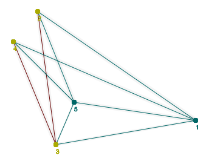
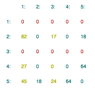

| Алгоритм Прима
Учение - свет, неучение - тьма©
|
|||||||||
| Прима | Краксала | ||||||||
| Обучение | Тестирование | Проверка | ||
|
Задача алгоритма
Алгоритм Прима — алгоритм построения минимального остовного дерева взвешенного неориентированого, связного графа. Алгоритм впервые был открыт в 1930 году чешским математиком Войцехом Ярником, позже переоткрыт Робертом Примом в 1957 году, и, независимо от них, Э. Дейкстрой в 1959 году. Алгоритм1. Выбираем минимальный вес среди помеченных столбцов (или, если таких еще нет, минимальный вес всей матрицы). 2. Зануляем строки (присваиваем всем элементам данной строки 0), номера которых являлись координатами минимального элемениа из пункта 1. 3. Помечаем столбцы, номера которых являлись координатами минимального элемениа из пункта 1. Выполняем шаги 1-3 до тех пор, пока в матрице есть хотя бы 1 ненулевой элемент. Результатом работы алгоритма является остовное дерево минимальной стоимости. Интерфейс Граф. Пользователю предоставляется неориентированый, связный, взвешеный граф. Чтобы узнать вес данного ребра, необходимо навести на ребро указатель мыши. По середине ребра появится белый квадрат с числом. Это число и является весом данного ребра. После того, как указатель мыши выйдет за пределы ребра вес исчезнет! Тренируйте память и внимание. Чтобы выделить ребро нажмите на него левой клавигой мыши. Чтобы снять выделение просто повторно нажмите на ребро.  Матрица смежности. Также, для вашего удобства, на экран выводится матрица смежности данного графа. Если строка нулевая, то веса отображаются красным цветом, если столбец выделен, то он отображаестя желтым цветом. |
||||